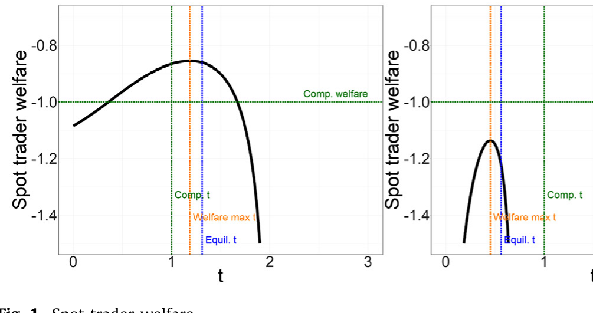
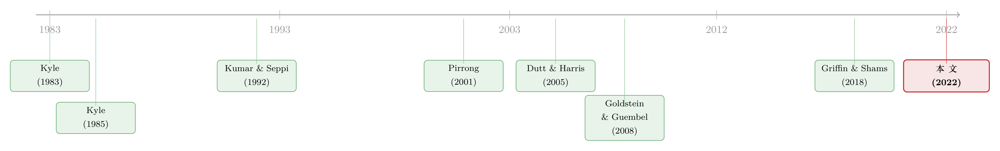

把结算价「拨」一下：衍生品操纵，究竟错在哪一步
本文读的是 Zhang (2022, Journal of Financial Economics)：当交易者用衍生品对冲某个风险因子时，他们可以通过在现货市场买卖标的物来「拨动」结算价、抬高自己的合约收益——这就是合约市场操纵。模型给出了一个把「操纵」从普通策略性交易里干净切出来的定义，并证明：在均衡里，操纵可以让所有人都更糟；而对现货交易者的合约头寸设上限，反而可能是一次帕累托改进。
1 引言：一桩「说不清」的罪
先说一个让监管者很尴尬的事实。
过去二十年里，全球的监管机构为「市场操纵」开出的罚单是以十亿美元计的：操纵外汇基准的银行被罚了超过 $10 billion，操纵 LIBOR 等利率基准的罚了 $8 billion 以上，连一个听上去很冷门的 ISDAFIX 利率掉期基准，相关罚款也超过了 $500 million。光是 2018 年，UBS 就因为试图操纵黄金期货被 CFTC 罚了 $15 million。
罚得这么狠，照理说「操纵」应该是一个定义得很清楚的罪名。可现实恰恰相反：1936 年的《商品交易法》把操纵列为非法，却从没给它下过定义。CFTC 在实务里的口径，大致是「带着制造人为价格的意图去交易」。问题在于，「意图」这两个字，几乎抓不住。
为什么抓不住？因为任何一个稍微有规模的交易者，都知道自己的买卖会推动价格——这本就是他们在市场里扮演的角色：管理、优化自己交易的价格冲击 (price impact)。如果把「明知会推动价格还去交易」就算作操纵，那几乎所有的策略性交易都得算操纵。法律文献近些年干脆转向了「intent（意图）」这个标准，靠的是从邮件、聊天记录里翻出来的「smoking gun」——某个交易员亲口承认「我就是要把价格推上去」。可一个法务上足够老练的机构，只要在录音里闭口不谈自己的价格冲击，就能轻松绕开这套指控。
于是我们就有了一个很别扭的局面：一个被罚了几百亿美元的罪名，经济学上却说不清它到底是什么——它和合法的策略性交易，边界在哪里？（关于「操纵」在另一个场景里的样子，可参见《一次「拆股」，如何把散户钉在最高点》。）
这篇论文要做的，就是把这条边界画出来。
2 一个最小的操纵模型
要画清这条线，作者搭了一个尽可能简单的模型。它的两块「积木」其实很直观。
第一块积木：合约与现货之间的流动性错配 (liquidity mismatch)。 衍生品市场往往比它脚下的现货市场大得多。论文给的例子很扎实：天然气的 Platts Inside FERC Houston Ship Channel（HSC）基准，背后每周实际成交的物理天然气大约只有 1.4 million MMBtu；可挂钩这个基准、以它做现金结算的 ICE HSC 基差期货，许多交割月的未平仓量 (open interest) 超过 75 million MMBtu。利率市场更夸张：SOFR 背后是每天约 $1 trillion 的隔夜回购，而 2014 年挂钩 USD LIBOR 的合约名义本金已超过 $160 trillion。
这种错配意味着什么？意味着只要你在合约上的头寸够大，你在现货市场上哪怕亏一点去拨动那个小小的基准价，合约上赚的也可能远远盖过现货上的损失。
第二块积木：现货市场不完全竞争。 现货交易者人数有限（模型里是 n > 2 个），所以他们的买卖会移动价格。如果他们都老老实实地按竞争方式报价，现货市场会以「零成交」出清，拍卖价 p 恰好等于风险因子 ψ，所有人都能用衍生品完美地分担因子风险。可一旦有人有动机去扭曲现货，这个「第一最优」就破了。
把这两块拼起来：一个手握大额合约头寸、又能在现货市场动手的交易者，会故意去买（或卖）现货，把结算价朝着对自己合约有利的方向推。论文把这种行为，正式命名为合约市场操纵 (contract market manipulation)。
3 三种价格冲击，与那唯一「越界」的一步
现在到了全篇最关键的一步——也是这篇论文真正的贡献所在。
作者注意到，在这个模型里，价格冲击会对交易者的行为产生三种截然不同的影响：
- 第一，少提供流动性。 有价格冲击时，交易者报价曲线（bid curve）的斜率会比竞争市场下更平——他们不愿意为别人当「价格的减震器」。
- 第二，压价（shade bids）。 面对自己的库存冲击 (inventory shock)，交易者不会一比一地去现货市场对冲，而是有所保留地少交易一点。
- 第三，也是唯一一种合约市场独有的：同时活跃在合约和现货两个市场的交易者，会为了抬高自己合约头寸上的收益，去扭曲现货交易。
请注意前两种效应：它们在任何不完全竞争的金融市场里都存在，是策略性交易的「常态」，谈不上什么罪。真正越界的，只有第三种。
这就是本文给「操纵」下的经济学定义：把价格冲击的第三种效应——为合约收益而扭曲现货——单独切出来，定义为非法操纵。 它干净地把操纵和合法的流动性管理、库存对冲区分开了。
而且这个定义还自带一个漂亮的政策推论。设想一个极端政策：禁止现货市场参与者持有任何衍生品合约。在这个世界里，现货交易者照样会少提供流动性、照样会压价（前两种效应还在），但他们再也没有任何合约头寸的收益可以去影响，于是第三种效应——操纵——被精准地清零了。
现实中当然很难真去禁止。但它给了监管者一把极好用的概念尺子：面对一个可疑的交易模式，去问一句——
「如果这位交易者手里没有任何合约头寸，他在现货市场的这套操作，还能用利润最大化来解释吗？」
解释不了，那就指向操纵。这比在录音里找「smoking gun」要硬气得多。
4 模型：从拍卖的一阶条件，看见那一项「操纵」
接着，一个自然的问题是：操纵这件事，在数学上长什么样？
模型让 n 个现货交易者在一个统一价格双向拍卖 (uniform-price double auction) 里交易一种同质的现货品。每个交易者都是风险厌恶的，持有 CARA 效用——若最终财富为 W，则
$$U_i(W) = -e^{-\alpha W}$$
风险因子 ψ、各人的因子敞口 x_i、合约头寸 c_i 都各自独立正态：x_i ∼ N(0, σ_x²)，x_H ∼ N(0, σ_H²)，ψ ∼ N(μ_ψ, σ_ψ²)。一个现货交易者净买入 z_i 单位现货，能拿到的货币收益是
$$\psi z_i - \tfrac{1}{2}\kappa z_i^2$$
这里 ψ z_i 说明现货的边际价值随风险因子 ψ 波动；二次项 -½κ z_i² 则是储存/持有成本——它让交易者对现货的边际价值递减，κ 越大，意味着总储存容量越小。
但真正关键的一步，在于把合约结算也写进这位交易者在拍卖里的目标。在第 5 阶段，每位合约持有人按现货拍卖价拿到 c_i · p 的结算。于是现货交易者 i 在拍卖那一刻，要最大化的总货币收益是：
整个故事的张力，全压在前三项和最后一项 c_i p 的对立上。前三项是「我在现货上能赚多少、要花多少」；最后一项是「我的合约能结算到多少」。而 p 不是给定的——在不完全竞争里，多买一单位现货 z_i，就会把拍卖价 p 往上抬一点（价格冲击 λ）。
把这一点写进一阶条件。对 z_i 求导（注意 dp/dz_i = λ）：
$$\psi - \kappa z_i - p - \lambda z_i + \lambda c_i = 0$$
整理出现货交易者的需求：
$$z_i = \frac{\psi - p + \lambda c_i}{\kappa + \lambda}$$
这个式子，把三种效应一次性摊在了阳光下。分母里的 κ + λ（而不是竞争市场下的 κ）——那是第一种效应：价格冲击让需求曲线更平、流动性更少。分子里 ψ - p 决定了基于基本面的交易，会被 1/(κ+λ) 压扁——那是第二种效应：压价。
而那一项 λ c_i / (κ+λ)，才是这篇论文的主角。它说：一个持有正的合约头寸 c_i > 0 的交易者，会额外多买现货——不为别的，只为把 p 推高、让自己 c_i p 的结算更值钱。这就是操纵项。c_i = 0 时它消失，操纵随之消失——这正好印证了上一节那个「禁止持仓」的概念基准。
5 主要结果：操纵如何让所有人都更糟
于是反转出现了。
你可能会想：既然操纵者能在结算价上「占便宜」，那他们至少是受益的吧？亏的应该是那些不能碰现货的纯对冲者 (pure hedger)？
模型给出的答案是：不一定。在均衡里，操纵可以让所有人都更糟——包括操纵者自己。
道理在于，操纵对现货交易者的福利有两股反向的力量：
- 一股是正的转移。 期望上，每个交易者都能把结算价往有利于自己合约头寸的方向推一点，于是平均而言能赚到一笔转移收益。
- 另一股是变大的风险。 但所有人都这么干的时候，每个人的操纵都在给结算价注入非基本面的噪声。结算价
p不再是风险因子ψ的干净信号，而成了一个带噪声的信号——这就给每一个合约持有人都凭空造出了一笔非基本面基差风险 (non-fundamental basis risk)。
对风险厌恶的交易者来说，第二股力量可以强到压过第一股。论文证明：在某些参数下，现货交易者作为一个群体，在均衡里反而比大家都竞争行事时更糟。如下图 1 所示，现货交易者的福利完全可能落到负区间。

Figure 1: Spot trader welfare
更妙的是均衡里那个反直觉的行为：现货交易者会过度对冲 (over-hedge)——买入超过自己真实因子敞口的合约头寸。为什么？因为合约头寸 c_i 越大，操纵的边际收益越大（回看那一项 λ c_i）。所以他们会主动加码合约，不是为了对冲，而是为了在现货市场操纵时赚得更多。这反过来给了监管者一条经验线索：当一个头寸大到远超对冲所需，本身就是操纵意图的信号。
而既然现货交易者自己都可能在均衡里受损，那么一个限制他们合约头寸规模的监管，就有可能是一次帕累托改进 (Pareto improvement)——既保护了纯对冲者，也保护了操纵者自己。这是全篇最漂亮的政策含义：position limits 不是零和的「劫富济贫」，而可能让每一类参与者都变好。
6 市场结构：储存、竞争与头寸上限
最后，论文把镜头拉远，问了一个监管者最关心的问题：什么样的市场结构，最容易被操纵？
模型给出三条干净的比较静态：
- 储存容量越小，扭曲越大。
κ是现货的边际储存成本（容量的倒数）。κ越大、容量越小，同样幅度的价格扭曲只需更少的现货交易就能实现——操纵变「便宜」了，扭曲随之变大。 - 固定总储存容量，竞争越充分，扭曲越小。 把同样的总容量分散到更多的现货交易者
n身上，单个交易者的价格冲击λ下降，谁也没法轻易把价格单方面拨到自己想要的位置。于是——这是一个很重要的政策点——现货市场的竞争政策，即便完全不增加总储存容量，也能缓解操纵风险。 - 合约头寸越大，扭曲越大。 直接对应那一项
λ c_i。所以对现货交易者的合约头寸上限 (contract position limits)，是压低操纵风险最直接的工具。
而且作者强调，这些操纵导致的基差风险，可以用监管者通常就能看到的数据估出来——在一般化的模型里，它能被表达成各人报价曲线的斜率、以及现货交易者库存冲击与合约头寸的方差/协方差的函数。这把一个抽象的理论，变成了一件监管者手边真能用的量尺：用来决定头寸上限该设多大，甚至决定一个新提出的衍生品合约该不该获批。
7 文献脉络
把这篇论文放回它所在的研究长河里，脉络会清晰很多。
最早把「期货操纵」搬上理论台面的，是 Kyle (1983) 和同期的 Garbade & Silber (1983)、Paul (1984)——他们开始追问现金结算 (cash settlement) 的期货合约，会不会天然地诱发对现货价格的操纵。

接着，Kumar & Seppi (1992) 是真正的先声：他们把 Kyle (1985) 那个带做市商的共同价值市场，嫁接上挂钩现货价的期货合约，第一次在均衡里刻画了现金结算期货的操纵。Pirrong (2001) 沿着现金结算这条线继续深挖，Dutt & Harris (2005) 则专门讨论了该如何为现货交易者设置头寸上限来防操纵。本文相对于这一脉的关键推进在于：它内生化了交易者的合约头寸（于是才能谈福利），并允许交易者之间有丰富的异质性（于是模型才能真的去拟合数据）。
另一条平行的线，是「价格被用作其他决策的输入」时产生的操纵动机——Goldstein & Guembel (2008)、Bond et al. (2010)、Bond & Goldstein (2015) 这一支的反馈效应 (feedback) 操纵。再加上一大批实证：Abrantes-Metz et al. (2012) 查 LIBOR、Griffin & Shams (2018) 查 VIX、Evans et al. (2018) 查外汇——它们把「操纵真实存在」这件事钉得很死。（基准本身在 LIBOR 退场后如何被重新设计、谁更「干净」，可参见《给基准做体检：LIBOR 退场之后，谁更「干净」？》与《把「信用敏感」弄丢之后，借钱反而更便宜了——重读 SOFR 折价》。）
技术上，本文的现货拍卖模型，站在线性-二次双向拍卖 (linear-quadratic double auction) 这一支肩膀上：Kyle (1989)、Vayanos (1999)、Vives (2011)、Rostek & Weretka (2015)、Du & Zhu (2017)、Duffie & Zhu (2017)、Lee & Kyle (2018)。还有一支研究最优基准设计的——Duffie et al. (2017)、Duffie & Dworczak (2018)、Coulter et al. (2018)、Baldauf et al. (2018)。本文与它们相关，但目标不同：它要的不是「设计一个最优机制」，而是量化既有市场里的操纵风险。
把这些线交汇起来，本文的位置就很清楚了：据作者所知，这是第一篇同时给合约市场和现货市场行为做微观基础、并系统分析合约市场操纵福利效应的论文。
8 评论与延伸（Q&A + 研究方向）
(a) 几个可能的疑问
Q：操纵和普通的「策略性交易/价格冲击」到底差在哪？
差在那「第三种」效应。模型里价格冲击有三重作用：少提供流动性、压价、以及为合约头寸收益而扭曲现货。前两种在任何不完全竞争市场都有，是合法常态；唯独第三种是合约市场独有的，本文把它——也只把它——定义为非法操纵。
Q：既然操纵者能在结算价上占便宜，为什么均衡里他们反而可能更糟？
两股反向力量。期望上他们能把结算价推向有利方向（正的转移），但当所有人都操纵时，结算价方差变大，给每个合约持有人凭空造出非基本面基差风险。对风险厌恶者，这股风险效应可强到压过转移收益，使现货交易者作为群体净亏。
Q：为什么「储存容量越小，操纵越严重」？
κ是现货的边际储存成本，也是总容量的倒数。κ越大、容量越小，实现同样的价格扭曲只需更小的现货交易量，操纵变得更「便宜」，因而扭曲更大。
Q：竞争（更多现货交易者）为什么能在不增加储存容量的前提下减小扭曲？
固定总储存容量、把它摊到更多交易者身上，单个交易者的价格冲击
λ下降，谁也无法轻易单方面把价格拨到自己想要的位置，操纵诱因被稀释。这给出了一个非储存性的政策杠杆：竞争政策本身就能防操纵。
Q：为什么理性交易者会「过度对冲」，买入超过真实敞口的合约？
因为操纵的边际收益随合约头寸
c_i递增（需求里那一项λ c_i）。多持合约，不为对冲，而为在现货操纵时赚更多。所以一个远超对冲所需的巨大头寸，本身就是操纵意图的信号。
Q：「禁止现货参与者持有衍生品」这条政策真能落地吗？
多数场景下不现实。但它的价值在于充当一个概念基准：监管者可以问「如果这位交易者不持有任何合约头寸，他在现货市场的行为还能用利润最大化解释吗？」不能解释，就指向操纵——这比靠录音里的「intent」要可操作得多。
(b) 几个可能的研究问题与提案
1. 把模型搬到公司债大宗交易/结算基准上。 【经济故事】公司债缺乏连续的现货价格，很多衍生与组合产品依赖少数成交价或评估价做基准；持有大额合约的交易者，是否有动机去「拨动」那几笔稀薄的现货成交？这正是本文「流动性错配 + 不完全竞争」的教科书场景。 【可行性】中。TRACE 有逐笔成交，但要识别「谁同时持有挂钩合约」很难——需要监管端的持仓数据。识别上可借鉴本文的「头寸—库存协方差」表达式。（合约形态本身如何被设计，可参见《看不见交易商的手：一份大宗交易合约该长成什么形状》。）
2. 外资持有人与新兴市场基准的操纵风险。 【经济故事】当一国的利率/汇率基准背后的现货市场很薄，而离岸衍生品市场很厚，外资持有人的合约头寸相对本地现货容量可能极大——本文预测，正是这种「错配 + 头寸大」的组合最易被操纵。 【可行性】中偏低。需要离岸合约持仓 + 在岸现货成交的匹配数据，跨境数据可得性是主要障碍；但比较静态（容量、竞争、头寸）可以做跨市场的横截面检验。
3. 用持仓数据，把「过度对冲」当作操纵意图的可检验信号。 【经济故事】模型给出一个干净的可证伪命题：操纵者的合约头寸会系统性地超过其真实因子敞口。能不能直接在数据里看到「头寸 − 敞口」这个楔子，并验证它与随后现货市场的异常交易相关？ 【可行性】高（在有持仓数据的市场，如 CFTC 的 Commitments of Traders / 大户报告）。识别上把「头寸超出对冲所需的部分」作为右侧变量，看它是否预测结算窗口附近的现货异常量。
4. LIBOR→SOFR 转换是否改变了操纵的「技术可行性」。
【经济故事】SOFR 背后是每天约 $1 trillion 的回购成交，远比 LIBOR 的报价式基准「厚」。按本文逻辑，更大的现货容量（更小的 κ）应当降低操纵导致的扭曲。这是一个现成的「自然实验」式叙事。
【可行性】中。可比较两套基准下挂钩合约结算窗口附近的现货价格异常，难点在于控制同期的其他制度变化。
我的判断
这篇论文最让我欣赏的，是它的克制。它没有去追求一个能拟合一切的复杂结构，而是用一个最小模型，把一件法律上吵了几十年、经济学上一直含糊的事——「操纵到底是什么」——切出了一条可操作的边界：价格冲击的第三种效应。这个定义之所以有力，是因为它自带一个可检验、可执行的反事实（「若无合约头寸，行为还能否被利润最大化解释」），把监管从「找录音」的泥潭里捞了出来。「操纵可以是帕累托劣化的、而 position limits 可以是帕累托改进」这个结论，也漂亮地翻转了「头寸上限是在惩罚某一方」的直觉。
对识别（或者说，对模型落地）我有两点保留。其一，全篇的福利结论高度依赖 CARA-正态-线性二次这套设定带来的解析便利；储存成本 κ 被解释成「容量倒数」是一个相当强的简化，真实的现货市场里，容量、运输、交割摩擦未必能被一个二次项干净地概括，这会直接影响那几条比较静态的外部效度。其二，模型假设风险因子 ψ 在拍卖前已被共同观测——非基本面噪声完全来自操纵；可现实中的结算价噪声里，多少来自操纵、多少来自普通的流动性冲击，恰恰是实证上最难分的一刀，而这正是把模型「拿去估」时绕不开的关。
后续我最想看到的，是有人真的把第 5 节那个「用监管常见数据估操纵基差风险」的承诺兑现成一篇实证——哪怕只在一个市场（HSC 天然气基差期货是天然的候选）上，把「头寸 − 敞口」的楔子和结算窗口的现货异常量对上号。一个能落地的操纵度量，比再多一个漂亮的均衡，对监管者更有用。
参考文献
- Bond, P., Goldstein, I. (2015). Government Intervention and Information Aggregation by Prices. Journal of Finance 70(6), 2777–2812.
- Bond, P., Goldstein, I., Prescott, E.S. (2010). Market-Based Corrective Actions. Review of Financial Studies 23(2), 781–820.
- Du, S., Zhu, H. (2017). What is the Optimal Trading Frequency in Financial Markets? Review of Economic Studies 84(4), 1606–1651.
- Duffie, D., Zhu, H. (2017). Size Discovery. Review of Financial Studies 30(4), 1095–1150.
- Dutt, H.R., Harris, L.E. (2005). Position Limits for Cash-Settled Derivative Contracts. Journal of Futures Markets 25(10), 945–965.
- Garbade, K.D., Silber, W.L. (1983). Cash Settlement of Futures Contracts: An Economic Analysis. Journal of Futures Markets 3(4), 451–472.
- Goldstein, I., Guembel, A. (2008). Manipulation and the Allocational Role of Prices. Review of Economic Studies 75(1), 133–164.
- Griffin, J.M., Shams, A. (2018). Manipulation in the VIX? Review of Financial Studies 31(4), 1377–1417.
- Kumar, P., Seppi, D.J. (1992). Futures Manipulation with "Cash Settlement". Journal of Finance 47(4), 1485–1502.
- Kyle, A.S. (1983). A Theory of Futures Market Manipulations. Center for the Study of Futures Markets, Columbia Business School.
- Kyle, A.S. (1985). Continuous Auctions and Insider Trading. Econometrica 53(6), 1315–1335.
- Kyle, A.S. (1989). Informed Speculation with Imperfect Competition. Review of Economic Studies 56(3), 317–355.
- Pirrong, C. (2001). Manipulation of Cash-Settled Futures Contracts. Journal of Business 74(2), 221–244.
- Vives, X. (2011). Strategic Supply Function Competition With Private Information. Econometrica 79(6), 1919–1966.
- Zhang, A.L. (2022). Competition and Manipulation in Derivative Contract Markets. Journal of Financial Economics 144(2), 396–413.